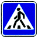

знак 5.19.1
Приложение 1 (дорожные знаки)
Закон Грузии «О дорожном движении» № 1830-რს, консолидированная редакция 25.06.2026 (Matsne, публикация 36). Юридическую силу имеет грузинский текст, русский — перевод. Источник: Matsne (рус.), Matsne (груз.).

Текст (рус., дословно)
5.19.1, 5.19.2. «Пешеходный переход» – место для перехода пешеходов. Знак 5.19.1 устанавливается на правой стороне дороги, а знак 5.19.2 – на левой стороне дороги. При отсутствии на переходе разметки 1.14 знак 5.19.1 устанавливается на ближней границе перехода, а знак 5.19.2 – на дальней границе перехода.
Официальный текст (груз.)
5.19.1, 5.19.2. „ქვეითთა გადასასვლელი“ − გზაზე ქვეითთა გადასასვლელისთვის გამოყოფილი ადგილი. 5.19.1 ნიშანი იდგმება გზის მარჯვენა მხარეს, ხოლო 5.19.2 ნიშანი − გზის მარცხენა მხარეს. გადასასვლელზე 1.14 მონიშვნის არარსებობისას 5.19.1 ნიშანი იდგმება გადასასვლელის ახლო საზღვართან, ხოლო 5.19.2 ნიშანი − გადასასვლელის შორ საზღვართან.
Где это в курсе
Уроки
- Выпуск 4. Пешеходный переход, железнодорожный переезд, населённый пункт — разбирает, ссылается
Понятия курса
- Пешеходный переход (определение, знаки 5.19, 1.23, разметка 1.14) — вводится в выпуске 4
Наши вопросы (1)
Билеты, которые на неё ссылаются (2)
По ссылкам на закон в пояснениях базы (с учётом наших уточнений онтологии).
Ссылаются в законе
Постоянная ссылка: norm/sign-5.19.1.html